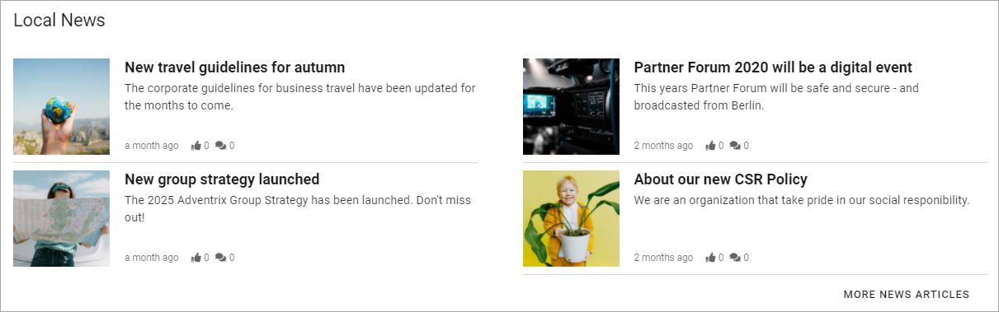
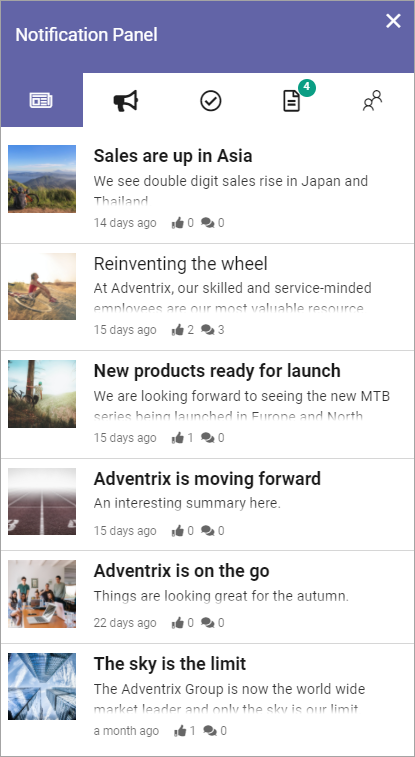
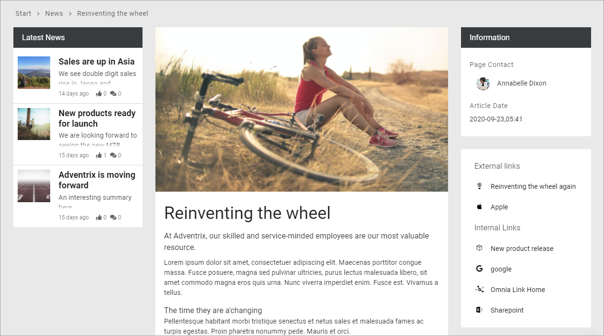
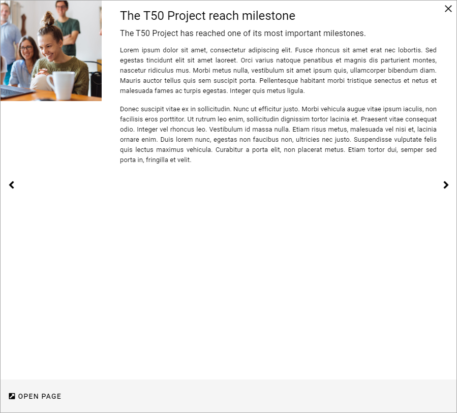
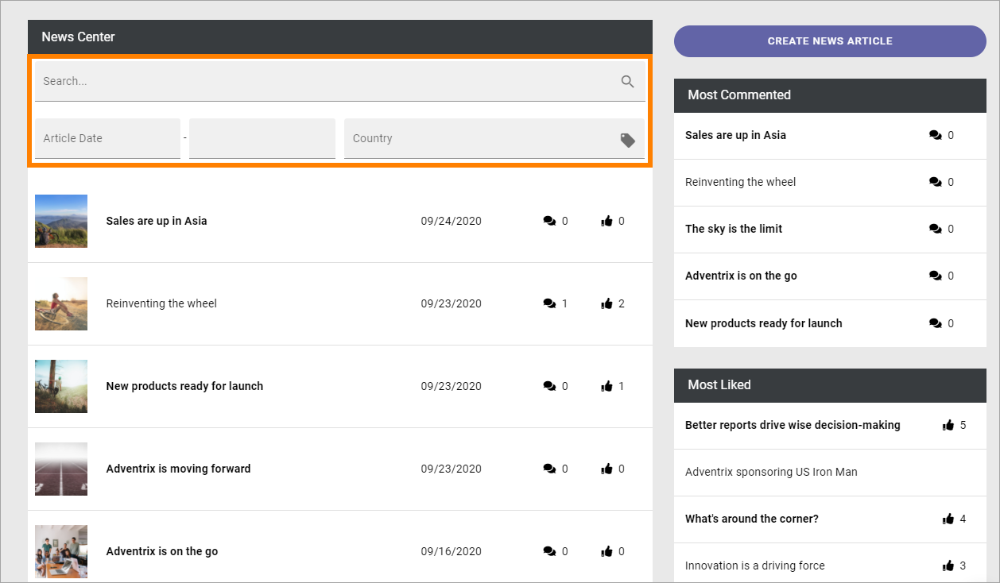

Read News¶
News is very often an important part of an Omnia implementation. Normally you can read both the latest news and older news. You can also find news articles through search using Quick Search and Advanced Search.
A common solution is that the latest news is available in a list at the start page. Here’s an example using the Page Rollup block:
The Page Rollup block can be used on any publishing page in Omnia. Another common solution is to make news available in the Notification Panel. Here’s an example:
To read a news article, click the heading or the image.
The news article can now be read. You can often read other new news articles here, without having to go back a step, for example:
When reading a news article, you can often like, share and comment the article:

Liking, sharing and commenting works the same way here as for publishing pages in Omnia.
A news list can also be set up to show the news articles in a windows, for example:
You can then go to other pages shown in this list by cliking here:

And you can go to the news article’s page, by clicking “Open Page”.

The News Center¶
The most common solution is that all published articles are available in a News Archive/News Center. You can always search for news articles. It’s also possible to go to the news archive and browse the list, by clicking a link. Here’s an example:

A News Center can look like this:

The option “Create News Article” is shown for the users with the right permissions only, see: Create news
The main list displays all published news articles, the latest at the top. You can always browse the list to look for a specific news article.
Depending on how the News Center is set up it can also be possible to use search or to filter the list.
Another common solution is to display two lists to the right of the News list - one for the most commented News articles, and one for the most read or one for the most liked (in this case most liked):

You can click headings in these lists to read a news article.